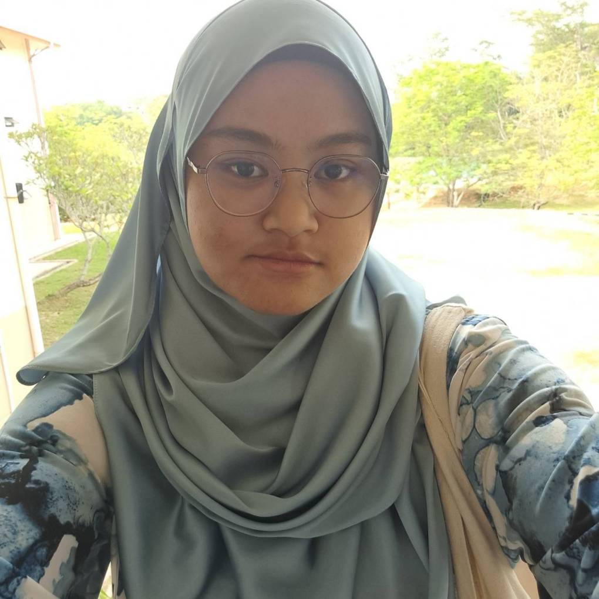
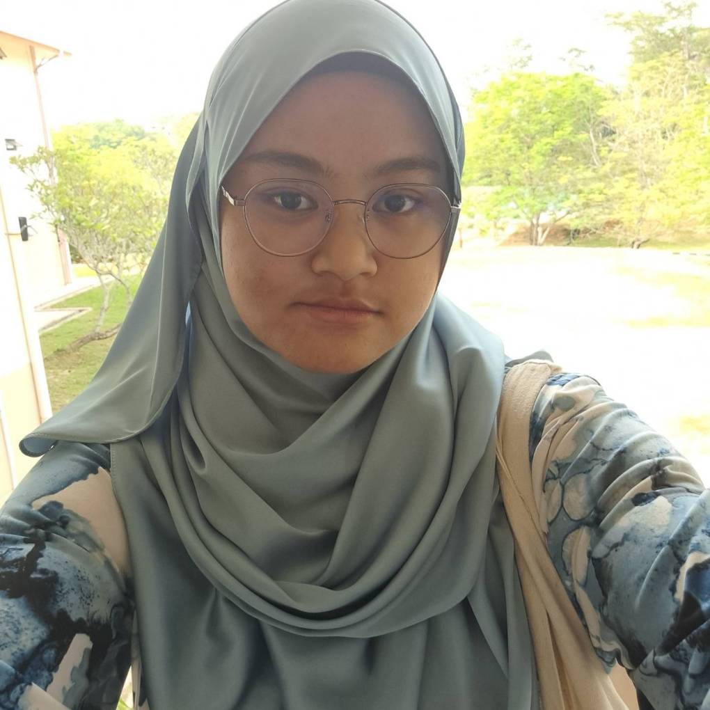
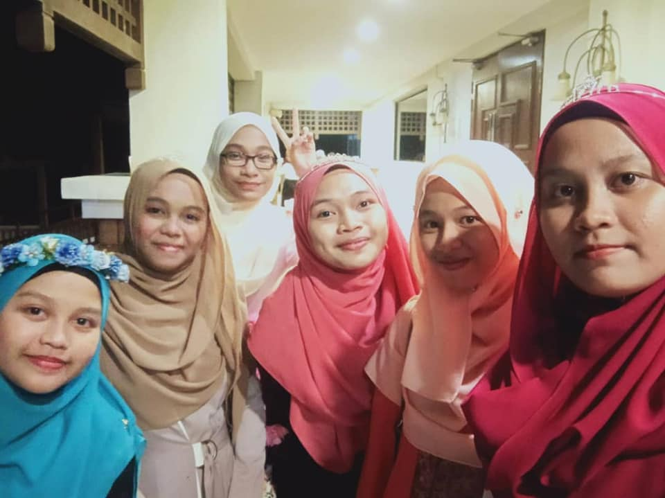

THE IDEA OF YOUTH
In my perspective, youth is a phase we can never reclaim once we surpass our twenties. During those formative years, especially as teenagers, emotions tend to be tumultuous due to uncertainties about the future. Reflecting on this, if you were to ask people if they long to relive their teenage years, you'd likely find a divided response. Many cherish the nostalgic atmosphere of youth, while others prefer not to revisit that time, perhaps due to the prevalence of challenging experiences overshadowing the good. As for myself, while I don't wish to revisit my teenage years, it's not because of any negative experiences or trauma. Rather, I believe in valuing those memories as they are past chapters that have shaped who I am today. Embracing this perspective allows me to appreciate the journey without needing to relive it, recognizing the inherent value in each moment of growth and discovery.
MY HIGH SCHOOL FRIENDS
If someone asked me, what is one thing that keeping me stronger during my high school time, I would have to say, my friends. Of course they do not always there for me 24 hours but if I told them something, they are the one that could relate with me the most. As a teenager that time, what I need is neither advise nor logical thinking but I need someone who could be relate with what I told them and comfort me. I am pretty sure every teenager feel the same too. So in order to appreciate them coming into my life, I will now tell you who are they.
Her birthday is on 16th April 2004. Her favorite color is blue.
Her favorite artist is Mosawo. My first impression of her is that
she is so smart and mysterious but when I talk to her,
I just know that I was right.
We then share the same interest that makes me attract to her more.
I first met her in primary school but end up met again in high school.
We end up become close than before.
She then transfer to Kedah after we end our form 2 years.
Second picture is the last one we took before she left Besut.
I do feel upset that she leave but I can never abadoned her.
Even though we are not in same high school,
We still do keep in touch with each other.
When I told her that I am going to accept the offer to continued my study at Kedah
she is the most excited person since her house is there which mean, we can meet again.
As you can see,third picture is the last picture we took together.
Why? Because her family need to move to Perak.
Am I furious? Yes.
But how can I ever leave her? She is so precious to me.
So we still keep in touch like before.
From my point of view, our friendship is kind of positive.
If someone ask me who I care about the most, other than my family,
I would answer her name without hesitate.
 

There were 5 members in my squad including me. Their names is Solehah, Ainun, Syazrien and Shafina.
If I have to tell you how I met them for the first time, It will take more that one paragraph.
I met Ainun, Solehah and Shafina in classroom when we were all form one since we were classmates.
Meanwhile for Syazrien, she is old friend of Ainun and Shafina which making things smooth to get to know her.
Syazrien is in other class from us during form one but we always manage to talk and meet on other time.
It is true that Shafina, Ainun, Solehah and me were classmates but until form 4, Shafina enter class for architecture subject
meanwhile other three including me taking arts class. So, we're seperate with each other.
Syazrien on the other hand, taking natural science class.
For first picture, it was on fourth Eid, we celebrate it together.
As for second picture, it does not screaming happiness much. It was SPM result taking.
You can see at third picture, that picture taken after economy exam were done.
Since Shafina and Syazrien did not take economy paper, they do not attend to school that day.
In the fourth picture, Solehah, Syazrien and I were at beach hang out since Ainun and Shafina already went to college.
I am not a full boarding school student but I had time to live in hostel
when I was in form three years so as to focus on my studies.
It was not easy to fit in in new environment.
But thanks to these people, I feel like at home.
If I have to list people at hostel that I grateful for,
the list will be endless but
these three person that I want to mention here, they are really important.
Without their help, I am pretty sure I become much worst.
First, as you can see in first picture, the person that helps me so much,
her name is Nur Allesa Elyana.
Second, as you can see in second picture, she is beside me, in the middle,
our dorm leader, Nur Aida.
Thirdly, Ezania Ezreen. You can see her wearing brown shawl in picture
thrid and fourth.
Even if they think they never help me, they did and I will never forget all of the thing they
did to me, I am so thankful for them.

Copyright © 2024 Nur Syahirah binti Mohd Yusof. All Rights Reserved.